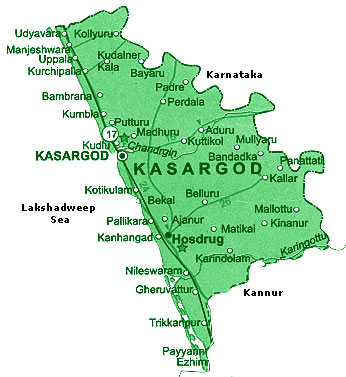

KASARGOD
Lying at the northern tip of Kerala bounded by the Western ghats in the east and Arabian sea in the west; twelve rivers flowing across its terrain, Kasaragod is an enchanting beauty of Nature’s creations.
There are different views on the derivation of the name “KASARAGOD”. One view is that it is the combination of two Sanskrit words kaasaara (which means lake or pond) and kroda (which means a place where treasure is kept). Another view is that it is the place where Kaasaraka trees (Strychnos nux vomica or Kaanjiram or Kaaraskara) are in abundance. Both views are relavant as there are large number of rivers, lakes and ponds in the coastal belt of the district besides thick flora consisting of innumerable varieties of trees, shribs etc. particularly plentitude of Kaasaraka trees.
The landscape is dominated by the characteristic coconut palms accompanying rolling hills and streams flowing into the sea. The landscape is dotted with tiled-roof buildings, topped with the famous Kasaragod tiles made with the local hard red clay and typically walled with laterite blocks. Older houses are commonly found with elaborate woodwork.
There are 12 rivers in this district.The longest is Chandragiri (105 kms) originating from Pattimala in Coorg and embraces the sea at Thalangara, near Kasargod. The river assumes its name Chandragiri from the name of the place of its source Chandragupta Vasti; where the great Maurya emperor Chandragupta is believed to have spent his last days as a sage. 
Tourist places

Valiyaparamba
Separated from the mainland by backwaters, Valiyaparamba fishing village is an island with the Arabian Sea as one of the…

Ranipuram Hill Station
RANIPURAM Formerly known as Madathumala. About 48 KMs east of Kanhangad. Lying 780 meters above sea level. In beauty and…

Bekal Fort
Bekal Fort, is the largest fort in Kerala, situated at Bekal, Pallikera village in Hosdurg Taluk in Kasaragod district,…